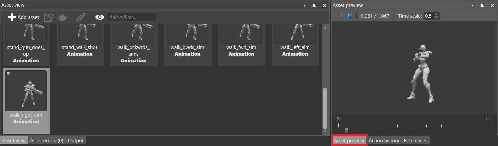
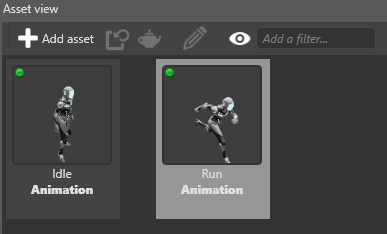
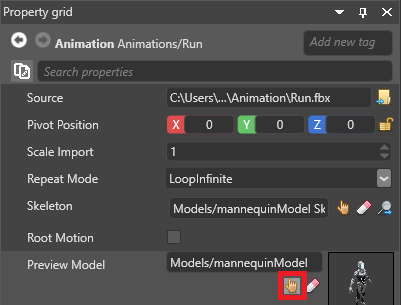

Preview animations
Warning
Приносим свои извинения за неудобства. Для этой страницы нет перевода на русский язык. Она будет отображаться на английском языке.
Intermediate Designer
After you import an animation, you can preview it in the Asset Preview.
By default, the Asset Preview is in the bottom-right under the Asset Preview tab.

Tip
To rotate the animation, click and drag the mouse.
The animation preview uses the model selected in the preview model in the animation asset properties.
Set the preview model
In the Asset View (at the bottom by default), select the animation asset.

In the Property Grid (on the right by default), under Preview model, click
 (Select an asset).
(Select an asset).
The Select an asset window opens.
Select the model you want to use to preview the animation.
Note
Make sure the model and the animation share identical skeletons.